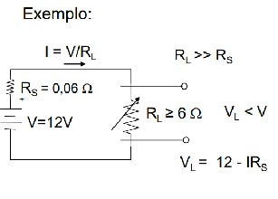

eletrônica básica
1- Introdução
Sistemas eletrônicos são sistemas que controlam correntes e tensões elétricas,modificando seus valores para realizar uma série de funcões como: amplificar som, ajustar o brilho de uma lâmpada, controlar a velocidade de um motor, porteiro eletrônico, etc…
o Sistema Eletrônico de um Dimmer como no exemplo abaixo, controla a corrente elétrica numa lâmpada, a fim de ajustar o seu brilho:
2- Sistemas Eletrônicos
Os sistemas eletrônicos precisam de fontes de tensão e de corrente constantes para fornecer a energia necessária para o seu funcionamento.
Então vamos estudar a seguir:
Fonte de Tensão
Fonte de Corrente
FONTE DE ALIMENTAÇÃO
Para um circuito funcionar ele precisa de uma fonte de energia, essa energia é fornecida por um circuito conhecido por FONTE DE ALIMENTAÇÃO, a qual possuí duas características:
Fonte de Tensão:Fonte de Corrente:
Fornece uma corrente constante ao circuito.
A Fonte de Tensão é um circuito que fornece uma tensão constante ao equipamento ligado a ele, independente de sua carga elétrica. Dizemos que uma fonte de tensão é ideal quando ela apresenta uma resistência interna igual a “zero”, neste caso a corrente do circuito vai variar em função da carga, como na fórmula a seguir: I= V/RL
No entanto, não existe uma fonte de tensão capaz de fornecer uma corrente infinita quando a impedância RL vai para zero, pois sempre uma fonte possui uma resistência interna.
FONTE DE TENSÃO REAL
São suas características:
-Deve possuir resistência interna bem menor que a resistência da carga.
- Essa resistência pode ser desprezada, se for da ordem de 100 vezes menos que a da carga.
Veja na figura abaixo:

A Fonte de Tensão é quase Ideal, quando Rs <= 0,01RL
FONTE DE CORRENTE
A Fonte de Corrente é um equipamento que fornece uma corrente constante ao circuito, independente da carga conectada a ela. A Fonte será Ideal, quando ela apresentar uma resistência interna muito Alta, ou seja, somente a tensão irá mudar em função da carga RL
voltar